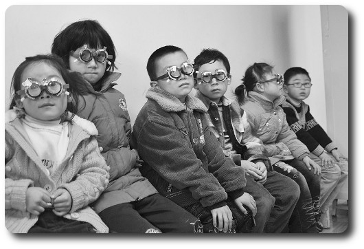

病夫 bìng fū:
1903年，梁启超在《新民说》里，第一次用“病夫”来形容所有的中国人：“夫中国——东方病夫也，其麻木不仁久矣。”
1905年，小说《孽海花》出版，其作者曾朴即公开署名“东亚病夫”。
"东亚病夫" 是侮辱我们
我们病得绝非
东亚运动会水平，而是奥运会水准
所谓“正常”，不同地域、不同时代、不同文化的人，都有不同的标准。在公元2013年的秋天，巴黎女孩当街抽烟，北京小伙儿当街挖鼻孔，孟买老大爷当街洗澡，在当时当地都是“正常”的行为。
同样，“病态”也是个相对的概念。患者多了，大家见多不怪，病态也就慢慢成了常态了。当今近视眼在中国、肥胖在美国，都是这样的例子。
中国社会的许多丑恶现象，仅仅从道德、信仰的角度，是解释不通的。一个对丑恶习以为常、对善良嗤之以鼻的社会，是病态的。 而这种群体的病态，是由无数个体的病态堆积而成的。 更可怕的是，恰恰因为全社会熟视无睹、甚至身体力行，使患者本人对自己的行为感到理所当然、理直气壮。比如，有些患者习惯用“刀子嘴、豆腐心”给自己出口伤人的行为辩解。
关于人格障碍的详细资料，网上能找到一些。感兴趣的网友可以自己去查找。我想把探索、发现的乐趣留给大家。那种豁然开朗的感受、和随之而来的不寒而栗，我体验过。
我只想给大家几点提示：
我本人不是心理学专业人士。只不过受命运的捉弄，与自恋人格障碍、边缘性人格障碍有过零距离接触。久病成医吧！
人格障碍给患者本人带来巨大的痛苦，其亲友也深受其害。父母的精神疾病，会影响子女的健康成长，人格障碍患者，很多有家族史。加上中国社会传统上对人性的压抑、理性思考的缺乏，更助长了各种精神疾病的蔓延。这恐怕不是一代人能够解决的。但愿我们的后代能有一个更健康的生存空间。
知病才能治病。我做这个网站的目的，就是让更多的人知道人格障碍。恶性循环的怪圈，只有靠我们的行动，才能打破它。
“东亚病夫”一词的确比较刺耳。虽说良药苦口，但如果我伤害了您的感情，我向您道歉。
刚才只是开个玩笑。我的联系方式（Facebook、Twitter）在下面。